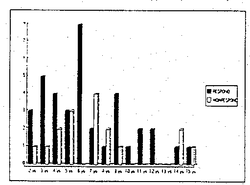

E. T. Jørgensen1 si Å Svensson2
1Departamentul de Dermatologie si Venereologie, Spitalul Central Kalmar si 2Spitalul Central Kristianstad, Suedia
Pe un esantion in numar de 54 baieti cu fimoza tratamentul cu propionat de clobetasol (Dermovate®, Glaxo, in Anglia) s-a dovedit eficient, fara efecte secundare. Interventia chirurgicala a fost evitata in 70% din cazuri.
Acta Derm Venereol (Stockh) 1993; 73: 55-56
E. T. Jørgensen, Department of Dermatology, Länssjukhuset, S-391 85 Kalmar, Sweden.
Preputul nu este aproape niciodata retractabil la nastere, fiind ceea ce se cunoaste sub numele de fimoza congenitala, care dispare in general inainte de varsta de 4 ani.1 Incidenta fimozei este de 8% la varsta de 6-7 ani si 1% intre 16-17 ani.2
In cazuri operabile, fimoza este cauzata de lichen sclerosis si atrophicus pana la 90% din cazuri.3-11 Nu este cunoscuta nici o alta boala de piele in istoria medicinei care sa cauzeze fimoza la baieti.
Lichen sclerosus si atrophicus in zona penisului a fost descrisa pentru prima data in anul 1908 de catre Delbanco ca Kraurosis glandis et praeputii.12 Termenul de balantita a fost utilizat de Stuhmer in 1928,13 si cativa ani mai traziu Layman & Freeman au demonstrat de era vorba de aceeasi balanitis xerotica obliterans.14
Lichen sclerosus et atrophicus a fost tratata cu success cu propionat de clobetasol si alti sterioizi cu aplicare locala.15–18 Scopul acestui studiu a fost sa determine daca propionatul de clobetasol poate vindeca fimoza la baieti.
MATERIALE SI METODE
Intre mai 1985 si decembrie 1990, 54 de baieti intre 2 si 15 ani (varsta mediana 6,9 ani) au fost inclusi in acest studiu deschis pe pacienti care erau referiti pentru interventie chirurgicala.
Fimoza a fost definita ca preput neretractabil fara aderente si/sau banda circulara stramta care facea imposibila completa retractare.
La varsta de 4 ani aproximativ 10% din baieti prezinta aderenta a preputului de gland.1 Pacientii cu acesta problema nu au fost inclusi in studiu. Acesta a fost singurul criteriu de excludere.
[Nota CIRP: Autorii utilizeaza termenul “aderente” pentru a descrie o conditie normala. Legatura normala fiziologica intre gland si mucoasa interioara a preputului persista in unele cazuri pana mult mai tarziu. Acest lucru este normal si nu necesita tratament.]
Acestor pacienti li s-a aplicat tratament cu propionat de clobetasol 0,05% (Dermovate) unguent. Parintilor li s-a indicat sa aplice unguentul intr-un strat subtire pe exteriorul preputului de la margine spre corona glandului o data pe zi. S-a recomadat retractia usora a preputului pentru dilatatie cat mai mult posibil fara a cauza durere.
Pacientii au fost examinati la o luna de la inceperea tratamentului. In cazurile in care fimoza a persistat, tratamentul a fost continuat pana la 3 luni. Pacientii au fost considerati vindecati in momentul in care preputul a devenit complet retractabil.
Pacientii care nu au fost vindecati in 3 luni au fost referiti departamentului chirurgie.
In iunie 1991 a fost trimisa o scrisoare parintilor baietilor a caror fimoza a disparut in urma tratamentului cu unguent steroidal. Au fost intrebati daca pacientii erau in continuare fara simptome sau daca vreo operatie a fost efectuata de la ultima lor vizita. Doi parinti, care nu au raspuns, au fost contactati prin telefon.
REZULTATE
Tratamentul local cu propionat de clobetasol a dat rezultate favorabile la 38 din cei 54 de baieti. Pentru acesti pacienti vindecati durata mediana de urmarire a fost de 3,9 ani (interval 0,8–5,6 ani). Durata mediana a tratamentului a fost de 49 zile. Nici un pacient nu a prezentata atrofie a pielii sau alte efecte secundare dupa incheierea tratamentului.
La 4 pacienti fimoza a fost cauzata de preput intens sclerotic, considerat caz tipic de lichen sclerosis et atrophicus. 3 din acesti 4 pacienti au fost vindecati cu propionat de clobetasol.
Dupa 3 luni de tratament cu propionat de clobetasol 16 baieti au prezentat fimoza persistenta si au fost referiti departamentului chirurgie. 3 preputuri amputate au fost apoi examinate histologic si s-a constatat ca toate prezentau indicii de lichen sclerosis et atrophicus.
Nu s-a constatat vreo diferenta in distributia pe varsta intre cei care au raspuns favorabil si cei care nu au raspuns tratamentului cu stereoid. (Fig 1)
DISCUTIE
Studiul a demonstrat pentru prima data ca tratamentul cu steroid local este eficient in tratatrea fimozei. Principalele simptome ale pacientilor au fost cele cunoscute, ca de exemplu infectii repetate, durere la urinat, dificulate in directionarea jetului de urina si umflarea preputului cu scurgeri de urina.3 Fimoza congenitala dispare in mod spontan in multe cazuri chiar si dupa varsta de 4 ani.1,2 Acesta rezlovare spontana poate dura mai multi ani si este imposibil a se prezice cand anume va avea loc. Toti acesti pacienti au avut simptome clare iar parintii au solicitat tratamentul in locul asteptarii. Din cauza ca nu exista vreo traditie pentru circumcizie in Suedia parintii au fost foarte incantati sa incerce aplicarea unui steroid local in locul interventiei chirurgicale.

Fig. 1. Distributia pe varste a doua grupe de pacienti.
Toti pacientii au fost instruiti sa retraga preputul cat mai mult posibil fara a cauza durere. Oster 2 a sugerat ca o asemenea procedura ar fi cauzat fimoza sa progreseze la 3 cazuri din 1968 de baieti. In grupul nostru de studiu nici unul nu a experimentat o asemenea deteriorare a situatiei. Mai multe studii sint necesare pentru a concluziona corect efectul acesti manipulari mecanice.
In studiul nostru numai 4 pacienti au prezentat leziuni care ar putea fi clasificate ca lichen sclerosis et atrophicus. Deoarece scopul studiului a fost de a evita interventia chirurgicala, nu au fost efectuate biopsii pentru examinarea histologica. Intr-un studiu efectuat de Chalmers8 14 din 100 baieti tratati de fimoza aveau lichen sclerosis et atrophicus confrom examinarii histologice. La alti 10 pacienti, examinarea histologica a aratat o inflamare cronica non-specifica. S-a spus ca simptomele clinice au fost aproape la fel la toti pacientii, totusi s-au aratat mai pronuntate in cazul celor cu lichen sclerosis et atrophicus.
Clemmensen19 a facut o examinare histologica a 78 pacienti operati din cauza de fimoza. La 15 dintre acestia examinarea histologica a fost compatibila cu lichen sclerosis et atrophicus, la 27 nespecificata si la 36 normala. Nu a fost gasita nici o corelatie intre schimbarile clinice si histologice.
Nu este conoscut daca lichen sclerosis et atrophicus poate dispare in mod spontan, ca si fimoza congenitala. Leziunile cauzate de lichen sclerosis et atrophicus incep cu o usoara inrosire,20 si deoarece interiorul preputului este totdeauna rosu este imposibil sa se stabileasca un diagnostic timpuriu fara biopsie. Studiul nu a raspuns la intrebarea de ce unii pacienti nu au raspuns favorabil la tratamentul cu steroid.
Tratamentul cu propionat de clobetasol este simplu si nu a cauzat vreo atrofie sau alte efecte secoundare. De aceea acest tratament trebuie sa fie prima alegere in cazurile confirmate de fimoza.
BIBILOGRAFIE:
(Accepted September 21, 1992)
http://www.cirp.org/library/treatment/phimosis/jorgensen/